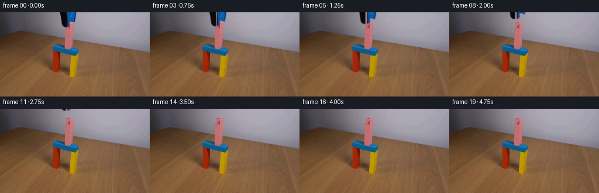
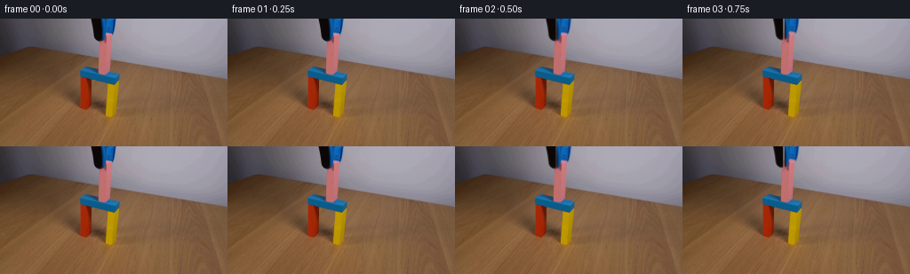

CODING AGENTS AS PIXEL WORLD MODELS
traex/GPT-5.6-Sol · 0174
点击播放 · 原生 RGB 像素
逐轮保存的候选
回放视频、检查图与代码变化。
每份候选均可单独播放。实际图片检查记录在下方工具轨迹中。
候选 01播放与检查图
点击播放 · 原生 RGB 像素


展开代码变化
--- 上一保存版本
+++ 本次保存版本
@@ -0,0 +1,192 @@
+"""Generate the requested locked-off block-placement demonstration.
+
+The supplied image is the exact opening frame. It depicts the pink block
+already resting on the blue lintel, with the dark/blue jaws still around its
+top. The continuation therefore releases the jaws and translates them out
+through the top of the fixed camera view. Everything else is copied directly
+from the supplied photograph.
+"""
+
+from pathlib import Path
+
+import cv2
+import numpy as np
+from PIL import Image
+
+import artifact_io
+
+
+HERE = Path(__file__).resolve().parent
+
+
+def _wall_model(image: np.ndarray) -> np.ndarray:
+ """Fit the smooth local wall behind the small tool.
+
+ Only achromatic pixels to either side of the tool are used. A low-order
+ surface retains the illumination falloff already present in the input;
+ a tiny deterministic correlated residual prevents the revealed patch from
+ looking unnaturally flat.
+ """
+ h, w = image.shape[:2]
+ yy, xx = np.mgrid[0:h, 0:w]
+ xn = (xx - 115.0) / 45.0
+ yn = (yy - 16.0) / 24.0
+ features = np.stack(
+ [
+ np.ones_like(xn), xn, yn, xn * xn, xn * yn, yn * yn,
+ xn ** 3, (xn * xn) * yn, xn * (yn * yn),
+ ],
+ axis=-1,
+ )
+
+ rgb = image.astype(np.float64)
+ chroma = rgb.max(axis=2) - rgb.min(axis=2)
+ sample = (
+ (yy <= 34) & (xx >= 70) & (xx <= 164)
+ & ((xx <= 98) | (xx >= 135))
+ & (chroma < 25) & (rgb.mean(axis=2) > 65)
+ )
+ a = features[sample]
+ prediction = np.empty_like(rgb)
+ for channel in range(3):
+ coef, *_ = np.linalg.lstsq(a, rgb[..., channel][sample], rcond=None)
+ prediction[..., channel] = features @ coef
+
+ # Fine, camera-like mottling. This is deterministic and is only exposed
+ # in a roughly 28 by 25 pixel area.
+ rng = np.random.default_rng(174)
+ noise = rng.normal(0.0, 1.0, (h, w)).astype(np.float32)
+ noise = cv2.GaussianBlur(noise, (0, 0), 0.75)
+ noise /= max(float(noise.std()), 1e-6)
+ prediction += noise[..., None] * np.array([0.85, 0.80, 0.90])
+ return np.clip(np.rint(prediction), 0, 255).astype(np.uint8)
+
+
+def _largest_component(mask: np.ndarray) -> np.ndarray:
+ count, labels, stats, _ = cv2.connectedComponentsWithStats(mask.astype(np.uint8), 8)
+ if count <= 1:
+ return mask
+ label = 1 + int(np.argmax(stats[1:, cv2.CC_STAT_AREA]))
+ return labels == label
+
+
+def _tool_layers(image: np.ndarray):
+ """Extract the black and blue halves of the grabber as premultiplied layers."""
+ rgb = image.astype(np.int16)
+ r, g, b = (rgb[..., index] for index in range(3))
+ yy, xx = np.mgrid[: image.shape[0], : image.shape[1]]
+ roi = (yy <= 25) & (xx >= 99) & (xx <= 133)
+
+ # Strong interior colors identify each jaw without including the pink
+ # block. One/two-pixel expansions retain the photographed edge blends.
+ dark_core = roi & (rgb.max(axis=2) < 62)
+ blue_core = roi & ((b - r) > 31) & ((b - g) > 13)
+ dark_core = _largest_component(dark_core)
+ blue_core = _largest_component(blue_core)
+ kernel = np.ones((3, 3), np.uint8)
+ dark = cv2.dilate(dark_core.astype(np.uint8), kernel, iterations=2).astype(bool)
+ blue = cv2.dilate(blue_core.astype(np.uint8), kernel, iterations=1).astype(bool)
+ dark &= roi & (xx <= 115)
+ blue &= roi & (xx >= 114)
+
+ # Assign the narrow shared seam once, rather than compositing it twice.
+ seam = dark & blue
+ dark[seam & (xx >= 114)] = False
+ blue[seam & (xx < 114)] = False
+
+ def make(mask):
+ # A subpixel feather is enough for clean affine motion while retaining
+ # the original antialiased perimeter colors.
+ alpha = cv2.GaussianBlur(mask.astype(np.float32), (0, 0), 0.42)
+ alpha = np.clip(alpha, 0.0, 1.0)
+ premult = image.astype(np.float32) * alpha[..., None]
+ return premult, alpha
+
+ return (make(dark), make(blue), dark | blue)
+
+
+def _clean_plate(image: np.ndarray, tool_mask: np.ndarray) -> np.ndarray:
+ """Make the few pixels hidden by the opening-frame grabber."""
+ wall = _wall_model(image)
+ plate = image.copy()
+ expanded = cv2.dilate(tool_mask.astype(np.uint8), np.ones((3, 3), np.uint8), 1).astype(bool)
+ plate[expanded] = wall[expanded]
+
+ # The jaws hide the upper ten pixels of the pink rectangular block. Its
+ # unobscured rows immediately below provide the exact material, lighting,
+ # grain, and horizontal face shading needed to complete that small area.
+ # The slight left-edge slope agrees with the perspective in the source.
+ for y in range(16, 26):
+ left = 112 if y >= 24 else 113
+ right = 125
+ source_y = y + 10
+ plate[y, left : right + 1] = image[source_y, left : right + 1]
+
+ # Preserve every originally visible pink pixel in and around the inferred
+ # cap. This makes release reveal detail rather than repainting it.
+ rgb = image.astype(np.int16)
+ r, g, b = (rgb[..., index] for index in range(3))
+ yy, xx = np.mgrid[: image.shape[0], : image.shape[1]]
+ visible_pink = (
+ (yy >= 15) & (yy <= 27) & (xx >= 110) & (xx <= 127)
+ & (r > 105) & ((r - g) > 24) & ((r - b) > 16)
+ )
+ plate[visible_pink] = image[visible_pink]
+ return plate
+
+
+def _move_layer(premult: np.ndarray, alpha: np.ndarray, dx: float, dy: float):
+ matrix = np.float32([[1.0, 0.0, dx], [0.0, 1.0, dy]])
+ size = (premult.shape[1], premult.shape[0])
+ moved_rgb = cv2.warpAffine(
+ premult, matrix, size, flags=cv2.INTER_LINEAR,
+ borderMode=cv2.BORDER_CONSTANT, borderValue=0,
+ )
+ moved_alpha = cv2.warpAffine(
+ alpha, matrix, size, flags=cv2.INTER_LINEAR,
+ borderMode=cv2.BORDER_CONSTANT, borderValue=0,
+ )
+ return moved_rgb, moved_alpha
+
+
+def _composite(base: np.ndarray, layer, dx: float, dy: float) -> np.ndarray:
+ rgb, alpha = _move_layer(layer[0], layer[1], dx, dy)
+ return base * (1.0 - alpha[..., None]) + rgb
+
+
+def generate() -> np.ndarray:
+ first = np.asarray(Image.open(HERE / "first_frame.png").convert("RGB"), dtype=np.uint8)
+ assert first.shape == (144, 256, 3)
+
+ dark_layer, blue_layer, tool_mask = _tool_layers(first)
+ plate = _clean_plate(first, tool_mask).astype(np.float32)
+
+ # Two opening-frame holds establish that the block has made contact. The
+ # jaws then ease apart by 1.35 px and rise 28 px over 3.5 seconds. Smooth
+ # cubic easing avoids a mechanical start/stop despite the low 4 fps rate.
+ frames = []
+ for index in range(20):
+ if index <= 1:
+ frames.append(first.copy())
+ continue
+
+ progress = np.clip((index - 1) / 14.0, 0.0, 1.0)
+ smooth = progress * progress * (3.0 - 2.0 * progress)
+ # Release is mostly complete early, before upward withdrawal.
+ release = min(progress / 0.28, 1.0)
+ release = release * release * (3.0 - 2.0 * release)
+ rise = -28.0 * smooth
+ opening = 1.35 * release
+
+ frame = plate.copy()
+ frame = _composite(frame, dark_layer, -opening, rise)
+ frame = _composite(frame, blue_layer, opening, rise)
+ frames.append(np.clip(np.rint(frame), 0, 255).astype(np.uint8))
+
+ result = np.stack(frames, axis=0)
+ result[0] = first # Explicit contract guarantee.
+ return result
+
+
+if __name__ == "__main__":
+ artifact_io.save(generate(), HERE)
可观测工具轨迹
实际执行的命令与返回图片。
命令 1exit 0
/bin/bash -lc "cat GENERATION_RULES.md && printf '\\n--- PROMPT ---\\n' && cat prompt.txt"
命令 2exit 0
/bin/bash -lc "find . -maxdepth 2 -type f -printf '%p\\n' | sort && printf '\\n--- tools ---\\n' && command -v ffmpeg || true && command -v python3 || true"
命令 3exit 0
/bin/bash -lc "python3 - <<'PY'
from PIL import Image
import numpy as np
im=np.array(Image.open('first_frame.png').convert('RGB'))
print(im.shape, im.dtype, im.min(),im.max())
print('mean/std',im.mean((0,1)), im.std((0,1)))
# coordinate samples grid
for y in [0,10,20,30,40,50,60,70,80,90,100,110,120,130,143]:
print(y, [tuple(im[y,x]) for x in [0,16,32,48,64,80,96,112,128,144,160,176,192,208,224,240,255]])
# extreme chroma masks bb/count
masks={
'pink':(im[:,:,0]>120)&(im[:,:,0]>im[:,:,1]*1.15)&(im[:,:,2]>im[:,:,1]*1.05),
'blue':(im[:,:,2]>80)&(im[:,:,2]>im[:,:,0]*1.15)&(im[:,:,2]>im[:,:,1]*1.05),
'green':(im[:,:,1]>80)&(im[:,:,1]>im[:,:,0]*1.15)&(im[:,:,1]>im[:,:,2]*1.05),
'yellow':(im[:,:,0]>110)&(im[:,:,1]>80)&(im[:,:,0]>im[:,:,2]*1.4)&(im[:,:,1]>im[:,:,2]*1.2),
'dark':im.mean(2)<45,
}
from scipy.ndimage import label
for n,m in masks.items():
ys,xs=np.where(m)
print('\\n',n,'count',len(xs),'bb', (xs.min(),ys.min(),xs.max(),ys.max()) if len(xs) else None)
lab,N=label(m)
comps=[]
for i in range(1,N+1):
yy,xx=np.where(lab==i); a=len(xx)
if a>=5: comps.append((a,(xx.min(),yy.min(),xx.max(),yy.max()),(xx.mean(),yy.mean())))
print(sorted(comps,reverse=True)[:20])
PY"命令 4exit 0
/bin/bash -lc "python3 - <<'PY'
from PIL import Image
import numpy as np
im=np.array(Image.open('first_frame.png').convert('RGB')).astype(int)
# class based on color differences
def cl(p):
r,g,b=p
if max(p)<45:return '#'
if max(p)<75:return 'd'
if b-r>35 and b-g>15:return 'B'
if b-r>15 and b-g>5:return 'b'
if r-g>45 and r-b>45:return 'R'
if r-g>25 and r-b>25:return 'r'
if r-b>55 and g-b>30 and r>135:return 'Y'
if r-b>35 and g-b>18:return 'o'
if abs(r-g)<15 and abs(g-b)<18:return '.'
if b>g and b>r:return 's'
return 'w'
print('ROI x40:160 y0:120, each char 2x2 majority')
for y in range(0,120,2):
s=''
for x in range(40,160,2):
chars=[cl(im[yy,xx]) for yy in range(y,y+2) for xx in range(x,x+2)]
s+=max(set(chars),key=chars.count)
print(f'{y:03} {s}')
PY"命令 5exit 0
/bin/bash -lc "python3 - <<'PY'
from PIL import Image
import numpy as np
from scipy.cluster.vq import kmeans2
im=np.array(Image.open('first_frame.png').convert('RGB'))
# Kmeans roi x75:145 y0:115 14 clusters
roi=im[:115,75:145].reshape(-1,3).astype(float)
np.random.seed(2); cen,lab=kmeans2(roi,14,minit='++',iter=40)
order=np.argsort(cen.mean(1)); rem={o:i for i,o in enumerate(order)}
chars='0123456789ABCD'
print([(chars[rem[i]],np.round(c).astype(int).tolist(),round(c.mean(),1)) for i,c in enumerate(cen)])
lab=np.array([rem[x] for x in lab]).reshape(115,70)
for y in range(0,115):
if y%2:continue
s=''
for x in range(0,70,2):
z=lab[y:y+2,x:x+2].reshape(-1); s+=chars[np.bincount(z,minlength=14).argmax()]
print(f'{y:03} {s}')
# pixels horizontal runs on select rows, quantized tuple per 3 px median
print('\\nRaw medians chunks x75..144')
for y in [0,10,15,20,24,25,30,35,40,45,50,54,55,60,64,68,72,74,80,90,100,105,110]:
print('y',y, [tuple(np.median(im[max(0,y-1):y+2,x:x+3],(0,1)).astype(int)) for x in range(75,145,3)])
PY"命令 6exit 0
/bin/bash -lc "python3 - <<'PY'
from PIL import Image
import numpy as np
I=np.array(Image.open('first_frame.png').convert('RGB')).astype(int)
R,G,B=I.transpose(2,0,1)
ms={
K:V for K,V in {
'K':(R<50)&(G<50)&(B<55),
'P':(R>145)&(R-G>40)&(R-B>35)&(G>65)&(B>60),
'U':(B-R>35)&(B-G>18)&(B>80),
'R':(R>120)&(R-G>60)&(R-B>70)&(G<70),
'Y':(R>145)&(G>105)&(B<40)&(R-G>15),
}.items()}
def runs(a, xmin=60,xmax=160):
inds=np.where(a[xmin:xmax])[0]+xmin
if not len(inds):return '-'
out=[]; st=pr=inds[0]
for x in inds[1:]:
if x>pr+1:out.append((st,pr));st=x
pr=x
out.append((st,pr))
return ','.join(f'{a}-{b}' for a,b in out)
for y in range(0,116):
vals=[runs(ms[k][y]) for k in 'KPURY']
if any(x"'!='"'-' for x in vals): print(f'{y:03} K:{vals[0]:17} P:{vals[1]:17} U:{vals[2]:17} R:{vals[3]:17} Y:{vals[4]}')
PY"命令 7exit 0
/bin/bash -lc "sed -n '1,240p' artifact_io.py"
命令 8exit 0
/bin/bash -lc "python3 - <<'PY'
try:
import cv2; print('cv2',cv2.__version__)
except Exception as e: print('no cv2',e)
try:
import scipy; print('scipy',scipy.__version__)
except Exception as e: print('no scipy',e)
PY"命令 9exit 0
/bin/bash -lc "python3 - <<'PY'
from PIL import Image
import numpy as np
I=np.array(Image.open('first_frame.png').convert('RGB')).astype(int)
for y in range(0,28):
print('\\ny',y)
for x in range(98,136):
r,g,b=I[y,x]
# print symbolic plus numeric transitions
if max(r,g,b)<55:c='K'
elif b-r>35 and b-g>15:c='U'
elif r-g>35 and r-b>30:c='P'
elif abs(r-g)<15 and abs(g-b)<18:c='.'
else:c='?'
print(c,end='')
print()
PY"命令 10exit 0
/bin/bash -lc "python3 - <<'PY'
from PIL import Image
import numpy as np
I=np.array(Image.open('first_frame.png').convert('RGB'))
for y in [0,5,10,15,16,17,18,20,22,24,25,26,30,40,50,55,60,62,64,66,70,72,74]:
print('\\ny=',y)
for x in range(102,136):
print(f'{x}:{I[y,x].tolist()}',end=' ')
if (x-101)%6==0: print()
print()
PY"命令 11exit 0
/bin/bash -lc "python3 generate.py && python3 - <<'PY'
from pathlib import Path
from PIL import Image
import numpy as np
F=np.stack([np.array(Image.open(f'frames/{i:02}.png').convert('RGB')) for i in range(20)])
I=np.array(Image.open('first_frame.png').convert('RGB'))
print('shape/dtype',F.shape,F.dtype)
print('frame00 identical',np.array_equal(F[0],I),'maxdiff',abs(F[0].astype(int)-I.astype(int)).max())
for i in range(20):
d=np.any(F[i]"'!=I,axis=2)
ys,xs=np.where(d)
print(i,'"'changed',len(xs),'bbox',None if not len(xs) else (xs.min(),ys.min(),xs.max(),ys.max()),'MAD',np.abs(F[i].astype(int)-I.astype(int)).mean())
print('outputs',[(p.name,p.stat().st_size) for p in map(Path,['pixels.npz','inspection.png','transition_check.png','index.html'])])
PY"命令 12exit 0
/bin/bash -lc "set -e
sha256sum pixels.npz frames/00.png frames/19.png > .tmp/hashes.before
python3 generate.py
sha256sum pixels.npz frames/00.png frames/19.png > .tmp/hashes.after
diff -u .tmp/hashes.before .tmp/hashes.after
python3 - <<'PY'
from PIL import Image
import numpy as np
z=np.load('pixels.npz')['pixels']
first=np.array(Image.open('first_frame.png').convert('RGB'))
out0=np.array(Image.open('frames/00.png').convert('RGB'))
files=list(__import__('pathlib').Path('frames').glob('*.png'))
assert z.shape==(144,256,20) and z.dtype==np.uint32
assert len(files)==20
assert np.array_equal(first,out0)
for p in files:
a=np.array(Image.open(p))
assert a.shape==(144,256,3) and a.dtype==np.uint8
# Fixed-camera guarantee away from action ROI.
last=np.array(Image.open('frames/19.png').convert('RGB'))
mask=np.ones((144,256),bool); mask[:28,98:135]=False
assert np.array_equal(first[mask],last[mask])
print('PASS: 20 RGB uint8 frames; frame 00 exact; packed tensor',z.shape,z.dtype)
print('PASS: deterministic regeneration; all final-frame changes confined to x=98..134, y=0..27')
PY
sha256sum pixels.npz"保存候选 1 份；完成命令 12 次；可验证图片返回 0 张。原始 API 响应与完整日志保留在本地。